Code Variants Using Model Blocks
This demonstration explains model variants. It shows you how to generate code that uses preprocessor conditionals to control which code is linked into the embedded executable.
Contents
Overview of Model Variants
You can use a model block to reference one Simulink model (the child model) from another Simulink model (the parent model). A model block can also have different variants when the user uses to reference a set of potential child models from the model block. The variants comprise a set of models that the model block can potentially reference. The figure below is a conceptual depiction of model variants. For example, in this demo the Right Controller model block can potentially reference two models. Those models provide variations upon a nominal, prescribed functionality.
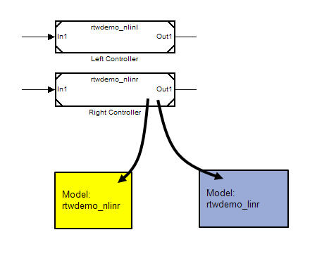
For a given model block, only one variant can be active. You can use the model block dialog to choose which variant is active. However, you can also choose to parameterize the choice of the active variant, and make it dependent on the values of variables and objects in the base MATLAB workspace. When you generate code, you can generate code for all of the variants, and defer the choice of active variant until it is time to compile that code.
Specifying Variants for a Model Block
Use the rtwdemo_preprocessor model to see how to construct a parent model that generates code for all of the model variants. Preprocessor conditionals guard the code for the variants. Macros define and activate the variants when the code is compiled.
Open the model:
open_system('rtwdemo_preprocessor')
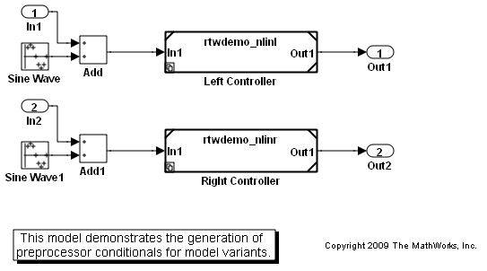 Right-click the Left Controller model block and select ModelReference Parameters... to open the model reference dialog.
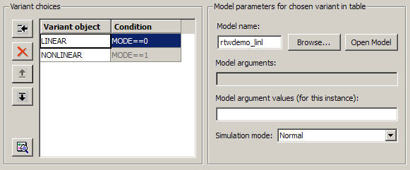
The dialog specifies two potential variants. The two variants are in turn associated with two distinct Simulink.Variant objects LINEAR and NONLINEAR, which exist in the base workspace. These objects have a property named Condition, an expression that evaluates to a Boolean and that determines which variant is active. The condition is also shown in the model reference dialog. In this example, the conditions of LINEAR and NONLINEAR are 'MODE == 0' and 'MODE == 1', respectively.
The Simulink.Variant objects of this example have been created in the base workspace.
LINEAR = Simulink.Variant; LINEAR.Condition = 'MODE==0'; NONLINEAR = Simulink.Variant; NONLINEAR.Condition = 'MODE==1';
The variant objects permit easy reuse of arbitrarily complex conditions throughout a model. Multiple model blocks can use the same variant objects, permitting you to gang and toggle their child model references as a set. The set can be toggled at simulation time by changing the value of MODE in the MATLAB environment, or when compiling the generated code, as explained in the next section. In this example, Left Controller and Right Controller reference the same variant objects, so that you may toggle them simultaneously.
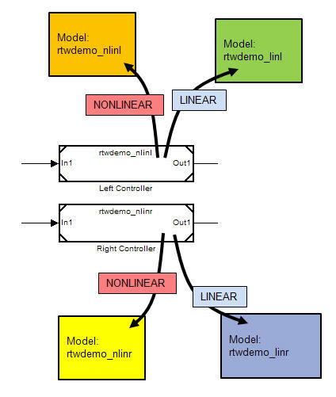
The nonlinear controller models implement hysteresis, while the linear controller models act as simple low-pass filters. Open the models for the left channel as rtwdemo_nlinl and rtwdemo_linl. The models for the right channel are similar.
open_system('rtwdemo_nlinl')
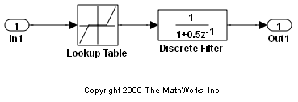 open_system('rtwdemo_linl')
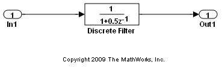 Specifying a Variant Control Variable
The generated code accesses the variant control variable MODE as a user-defined macro. In this example, rtwdemo_importedmacros.h supplies MODE. Within the MATLAB environment, you specify MODE using a Simulink.Parameter object. Its value will be ignored when generating code including preprocessor conditionals. However, the value is used for simulation. The legacy header file specifies the value of the macro to be used when compiling the generated code, which ultimately activates one of the two specified variants in the embedded executable.
MODE = Simulink.Parameter; MODE.Value = int32(1); MODE.RTWInfo.StorageClass = 'Custom'; MODE.RTWInfo.CustomStorageClass = 'ImportedDefine'; MODE.RTWInfo.CustomAttributes.HeaderFile = 'rtwdemo_importedmacros.h';
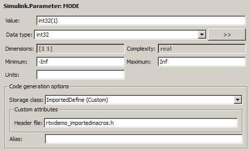
Simulating the Model with Different Variants
Since you set the value of MODE to 1, the model uses the nonlinear controllers during simulation.
sim('rtwdemo_preprocessor')
youtnl = yout;
If the value of MODE is changed to 0, the model uses the linear controllers during simulation.
MODE.Value = int32(0);
sim('rtwdemo_preprocessor')
youtl = yout;
You can plot and compare the response of the linear and nonlinear controllers:
figure('Tag','CloseMe'); plot(tout, youtnl.signals(1).values, 'r-', tout, youtl.signals(1).values, 'b-') title('Response of Left Channel Linear and Nonlinear Controllers'); ylabel('Response'); xlabel('Time (seconds)'); legend('nonlinear','linear') axis([0 100 -0.8 0.8]);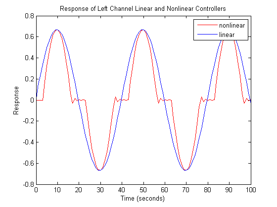
Configuring the Parent Model to Generate All Variants of the Model Block
On the Interface pane of the Configuration Parameters dialog of the parent model, select Use local settings from the Generate preprocessor conditionals list
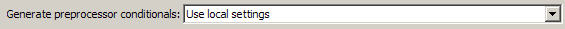
On each model block's Model Reference dialog, deselect the checkbox Override variant conditions and use following variant, and select the check box Generate preprocessor conditionals.
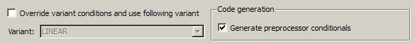
Analyzing the Generated Code
The generated code includes references to the variants LINEAR and NONLINEAR, as well as the definitions of macros corresponding to those variants. Those definitions depend on the value of MODE, which is supplied in an external header file rtwdemo_importedmacros.h. The active variant is determined by checks on the macros LINEAR and NONLINEAR. These checks also ensure that exactly one variant is active in the embedded application.
The macros LINEAR and NONLINEAR are defined in rtwdemo_preprocessor_types.h, along with the check for exclusive activation.
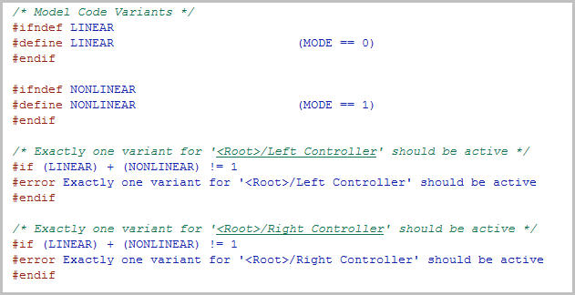
In rtwdemo_preprocessor_types.h, the main block states data structure (dwork) for the model conditionally compiles substructures for the variants' dworks. The active variant is determined by the macros LINEAR and NONLINEAR, which are in turn determined by the value of MODE, as supplied in the legacy header file rtwdemo_importedmacros.h.
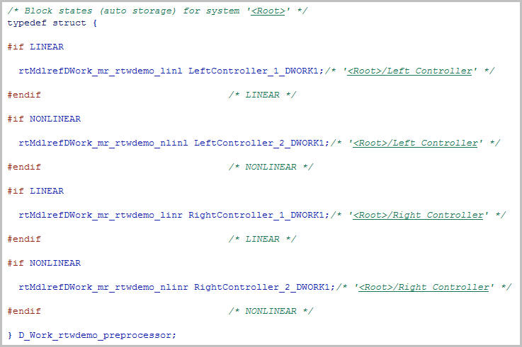
In rtwdemo_preprocessor.c, the calls to the variants' step and initialization functions are again conditionally compiled; a portion of the step function is shown below.
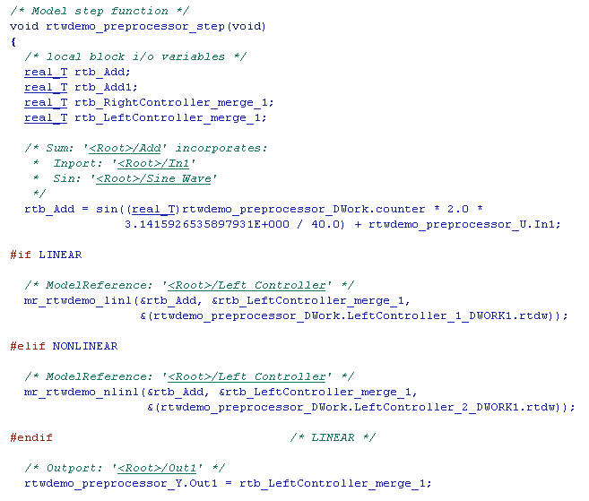
The Real-Time Workshop code report contains a section dedicated to the model variants, so that you can easily determine which parts of the model are activated conditionally upon the value of the macros in the legacy header files.
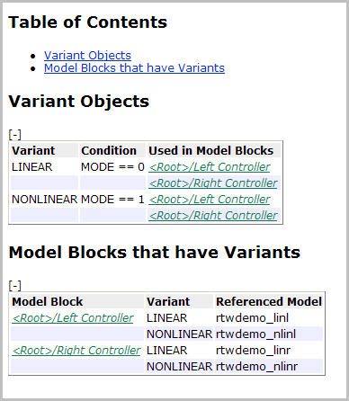
Further Information
See Generating Preprocessor Conditionals in the Real-Time Workshop Embedded Coder User's Guide.
Close the model, figure and workspace variables associated with demo
bdclose('rtwdemo_preprocessor') bdclose('rtwdemo_nlinl') bdclose('rtwdemo_linl') close(findobj(0,'Tag','CloseMe')); clear LINEAR NONLINEAR MODE